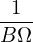
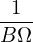
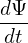
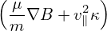
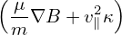

= Vd ⋅∇Ψ =
= Vd ⋅∇Ψ =  b ×
b × ⋅∇Ψ
⋅∇Ψ
|
= Vd ⋅∇Ψ = b ×⋅∇Ψ
|
 = B × = B × ⋅∇Ψ ⋅∇Ψ
|
 = − = − B ×∇Ψ ⋅ B ×∇Ψ ⋅
|
using
| B = ∇Ψ ×∇ϕ + g∇ϕ |
 | (103) |
Noting that both ∇B and κ are approximatedly along − direction, which is perpendicular to ∇ϕ, Eq.
(103) is written as
direction, which is perpendicular to ∇ϕ, Eq.
(103) is written as
 = − = − (g∇ϕ ×∇Ψ) ⋅ (g∇ϕ ×∇Ψ) ⋅
|
 =  gBp ⋅ gBp ⋅
|
if
 (Ψlcfs − Ψaxis) > 0, (Ψlcfs − Ψaxis) > 0,
|
then the drift from the local magnetic surface is outward, otherwise, the drift is inward.
 (Ψlcfs − Ψaxis) = (Ψlcfs − Ψaxis) =  gBp ⋅ (− gBp ⋅ (− )(Ψlcfs − Ψaxis) )(Ψlcfs − Ψaxis)
|
Examining the right-hand side of Eq. (5.8), we find that Bp and (Ψlcfs − Ψaxis) change signs simutaneouslly when the toroidal plasma current Iϕ change sign, thus the direction of Bp(Ψlcfs − Ψaxis) is independent of the sign of Iϕ. Therefore the sign of the radial drift is independent of the sign of Iϕ.